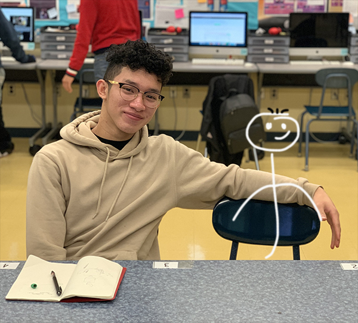
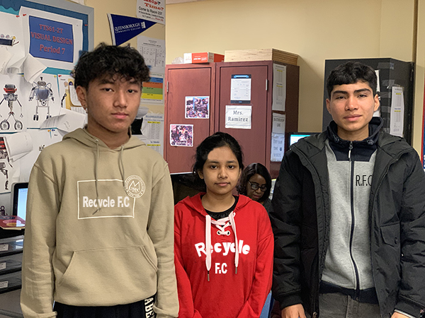

Shark Tank Project
Site 1
The purpose of AMA's website is to shine light to an ongoing issue - pollution. AMA plans to reduce carbon footprint so that there is less pollution. To do this, they've created the following product. AMA's product is a carbon collecting pen. It will be able to collect any amount of carbon dioxide in the air and convert it into ink for the pen.

Site 2
The purpose of Recycle F.C website is to reinvent the trash-can so it can tackle garbage in oceans. RFC thought adding voting polls to the garbage can to persuade the user to throw out their trash and leave a vote. For example there are many people that take sports serious and if they see that the pole says : which team is better?" and it's their team against another they are certainly going to leave a vote and while their there leaving a vote for their team they are bound to throw their trash away.
